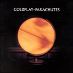

艺人：Coldplay
专辑：Parachutes
风格：Brit-Pop，Indie Rock(英式吉他流行，独立摇滚)
发行日期：2000年7月
厂牌：Parlophone

自2000年盛夏，一首满载少年浪漫情愫的情歌《Yellow》登上英国单曲排行第4名，红遍全英大街小巷开始；随后《Parachutes(降落伞)》专辑旋即空降英国金榜冠军宝座，98年正式成军于伦敦校园的Coldplay(酷玩乐团)已平地震雷一声响地迅速在全球乐坛窜起。
《Parachutes》是Coldplay在利物浦的Parr Street Studio录音室，与曾为Gomez、Badly drawn boy作嫁的Ken Nelson共同制作。纯净、美丽的中、慢板旋律加上主唱Chris Martin神似Thom Yorke(Radiohesd主唱)轻柔却极具戏剧张力的淳美歌声，10首慢流一致浪漫、迷美情绪的歌谣。
“Shiver”是一首绚烂美丽，关于单恋的故事的歌曲，令人感到颤栗的歌曲名称；以澎湃汹涌的吉他反复乐节，加上Chrir戏剧性嗓音，简单手法表现的畅销单曲“Yellow”；年少轻狂的“Spies”，伴随着彷复来自天堂的中八度圣音；赤裸，贝斯乐声轻抚的民谣“Sparks”简单、有力的生活宣言；“Trouble”以惊人、独特的轻柔钢琴尾曲开场，紧接着Jon和谐的吉他切入，瞬间整首歌曲彷复飞了起来；专辑最后一曲“Everything’s Not Lost”结尾部分的低声吟唱，充满了轻柔爵士味，是酷玩乐团Coldplay自信展现实力的进一步证明。
聆听《Parachutes》像感受一次美丽，但又寂寞的坠落；一段远离每日烦嚣，但又可以更清楚观看的经验。
他们的音乐和团员编制一样简约洁净却散发了无限无穷无际无垠的动人情怀，犹如在空无一人的昏黄密室中独自拔弄吉他音弦般，每个声音都是如此清澈，每个音符都是如此野蛮绝情的要让自己彻底心碎、崩溃、迷失……
我们苦苦地等候着这样的声音，特别是那些曾经沉浸在Radiohead、Suede、Pulp、Blur、Oasis等British Pop优美华丽乐风的摇滚乐迷们。而Coldplay就是这个值得我们耐心期待、聆听的声音，因为他们绝对会是今年英国最佳”新进”乐团，也绝对会是让你为之”心悸”的乐团。只要你是耳尖的英伦摇滚乐迷，不难在Coldplay身上听到Radiohead深深印烙的音影。乐队的灵魂人物Chris的嗓音和Thom Yorke（Radiohead主唱）简直如出一辙，也许少了点神经质的癫狂。但他的歌声同样是如此自虐自溺自甘沉沦在颓废沮丧的情思中。
曲目：
1. Don’t Panic
2. Shiver
3. Spies
4. Sparks
5. Yellow
6. Trouble
7. Parachutes
8. High Speed
9. We Never Change
10. Everything’s Not Lost
No Responses to “Coldplay《Parachutes》”
Leave A Reply
存档只读，评论已关闭。